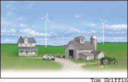

With the price of oil above $50 a barrel, political instability in the Middle East on the rise, and little slack in the world oil economy, we need a new energy strategy. Fortunately, a new strategy is emerging using two new technologies.
Gas-electric hybrid engines and advanced-design wind turbines offer a way to wean ourselves from imported oil. If over the next decade we convert the U.S. automobile fleet to gas-electric hybrids with the efficiency of today’s Toyota Prius, we could cut our gasoline use in half. No change in the number of vehicles, no change in miles driven - just doing it more efficiently. Several gas-electric hybrid car models are now on the market including the Toyota Prius, the Honda Insight and the hybrid version of the Honda Civic. The Prius - a midsize car on the cutting-edge of auto technology - gets an astounding 55 mpg in combined city/highway driving. No wonder lists of eager buyers are willing to wait six months or more for delivery.
Many other hybrid vehicles are beginning to appear in showrooms, or are scheduled to arrive soon. Ford has recently released a hybrid model of its Escape SUV, Honda has released a hybrid version of its popular Accord sedan, and General Motors will offer hybrid versions of several of its cars and trucks, including the Chevy Tahoe, the Chevy Malibu and the Saturn VUE. Beyond this, GM has delivered 235 hybrid-powered buses to Seattle. Other large cities slated to get hybrid buses are Philadelphia, Houston and Portland.
With gas-electric hybrid vehicles now on the market, the stage is set for the second step to reduce oil dependence: the use of wind-generated electricity to power automobiles. If we add to the gas-electric hybrid a plug-in capacity and a second battery to increase its electricity storage capacity, motorists could then do their commuting, shopping and other short-distance travel largely with electricity, saving gasoline for the occasional long trip. This could lop another 20 percent off gasoline use in addition to the initial 50-percent cut from shifting to gas-electric hybrids, for a total reduction of 70 percent.
The plug-in capacity gives access to the country’s vast, largely untapped wind resources. In 1991, the U.S.epartment of Energy published a National Wind Resource Inventory in which it pointed out that three states - Kansas, North Dakota and Texas - have enough harnessable wind energy to satisfy national electricity needs. Many were astonished by this news since wind power was widely considered a marginal energy source. Yet in retrospect, we know this was a gross underestimate simply because it was based on the wind turbine technologies of 1991. Advances in design since then enable turbines to operate at lower wind speeds and to convert wind into electricity more efficiently.
The average turbine in 1991 was roughly 120 feet tall, whereas new ones are 300 feet tall - the height of a 30-story building. Not only does this more than double the amount of harvestable wind, but winds at the higher elevation are stronger and more reliable.
In Europe, which has emerged as the world leader in developing wind energy, wind farms now satisfy the residential electricity needs of 40 million consumers. In 2003, the European Wind Energy Association projected that by 2020 this energy source would provide electricity for 195 million people - half the population of Western Europe. A 2004 assessment of Europe’s offshore potential by the Garrad Hassan consulting group concluded that if European governments move vigorously to develop this potential, wind could supply all of the region’s residential electricity by 2020. Wind power is growing fast because it is cheap, abundant, inexhaustible, widely distributed, clean and climate- benign. No other energy source has all of these attributes.
The cost of wind-generated electricity has been in free fall over the last two decades. The early wind farms in California, where the modern wind industry was born in the 1980s, generated electricity at a cost of 38 cents per kilowatt-hour. Now many wind farms are producing power at 4 cents per kilowatt-hour, and some long-term supply contracts have recently been signed at 3 cents per kilowatt-hour. And the price is still falling.
Unlike the widely discussed fuel cell/ hydrogen transportation model, the gas-electric hybrid/wind model does not require a costly new infrastructure; the network of gasoline service stations is already in place. So, too, is the electricity grid needed to link wind farms to the storage batteries in cars. For this new model to work most efficiently, we would need a strong integrated national grid. Fortunately, the need for modernizing our antiquated set of regional grids, and replacing them with a strong national grid, is now widely recognized, especially after the 2003 blackout that darkened portions of the northeast United States and southeast Canada.
One of the few weaknesses of wind energy - its irregularity - is largely offset with the use of plug-in gas-electric hybrids, as the batteries in these vehicles become a part of the storage system for wind energy. Beyond this, there is always the tank of gasoline as a backup.
Some 22 states now have commercial-scale wind farms feeding electricity into the grid. Although there is occasionally a NIMBY (Not In My Back Yard) problem, the PIIMBY (Put It In My Back Yard) response is much more pervasive. This is not surprising, since a single turbine can easily produce $100,000 worth of electricity in a year. The competition among farmers in Iowa or ranchers in Colorado for wind farms is intense. Farmers, with no investment on their part, typically receive $3,000 a year in royalties from the local utility for siting a single wind turbine, which occupies a quarter-acre of land. This quarter-acre in corn country would produce 40 bushels of corn worth $120 or in ranch country perhaps $10 worth of beef.
Communities in rural America desperately want to earn the additional revenue from wind farms and the jobs they bring. In addition, money spent on electricity generated from wind farms stays in the community, creating a ripple effect throughout the local economy. Within a matter of years, thousands of farmers could be earning far more from electricity sales than from farming.
Moving to highly efficient gas-electric hybrids with plug-in capacity, combined with the construction of thousands of wind farms across the country that feed electricity into a national grid, will give us the energy security that has eluded us for three decades. It also will rejuvenate farm and ranch communities, and shrink the U.S. balance-of-trade deficit. Even more important, it will dramatically cut carbon emissions, making the United States a model that other countries can emulate.
Lester R. Brown is the founder and president of the Earth Policy Institute.
|
 |
|
|